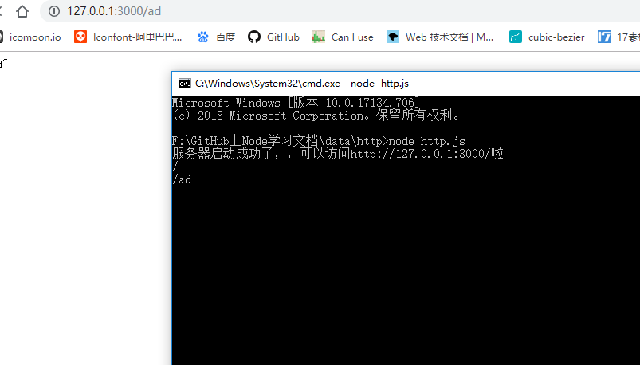
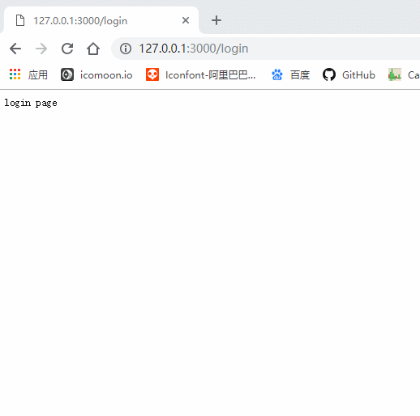

继续上一节的探讨，今天我们来聊聊Node中怎么搭建一个简单的web服务器。平时大家在撸码的过程中，经常需要向服务器发送请求，然后服务器接受请求，响应数据。今天我们就来自己手写一个简单服务器，根据前端请求，我们来响应相关数据。
开启一个本地服务器需要Node.js中http核心模块，至于核心模块是什么，我会在接下来的章节中和大家解释，也欢迎大家持续关注我的前端Node.js的学习之旅。
let http = require('http')引入之后我们利用http.createServer()方法得到一个服务器实例。
let server = http.createServer() // createServer()方法返回一个server实例，所以我们需要一个变量来接收
request的事情处理函数，代码如下：server.on('request', (req, res) => {
console.log(req.url) // 获取到请求的路径（请求路径永远以“/”开头）
})
// 给服务器绑定接收请求的处理事件，当服务器接收到客户端发送的请求后，会调用后面的处理函数，处理函数接收两个参数：请求信息对象，响应信息对象。server.listen(3000, () => {
console.log('服务器开启成功，可以通过访问http://127.0.0.1:3000/来获取数据~~')
})
// server.listen()用来绑定监听的端口号，可以传入第二个参数，当服务器开启成功后，触发后面的回调函数

我们看到请求路径被打印在了CMD窗口中。
好了，经过这简单的操作是不是已经完成了一个服务器的简单搭建，接下来我们来实现一个需求：
当我们访问“http://127.0.0.1:3000/login”, 服务器返回 “login page”
当我们访问“http://127.0.0.1:3000/register”, 服务器返回 “register page”
当我们访问“http://127.0.0.1:3000/”, 服务器返回 “index page”
当我们访问“http://127.0.0.1:3000/product”, 服务器返回 产品信息列表
我们实现这个需求，只需要在绑定服务器监听的事件处理函数中获取到用户的请求路径，然后根据不同路径返回不同数据即可，这个也不难。详情代码看下：
let http = require('http')
let server = http.createServer()
server.on('request', (req, res) => {
let url = req.url //得到请求的路径 （请求的路径永远以‘/’开头）
if (url === '/') {
res.end('index page')
} else if (url === '/login') {
res.end('login page')
} else if (url === '/register') {
res.end('register page')
} else if (url === '/product'){
let arr = [
{
name: 'iphone X',
price: 8888
},
{
name: 'iphone 7',
price: 4320
}
]
// 响应的数据类型必须是字符串或者二进制数据
res.end(JSON.stringify(arr))
} else {
res.end('404 NOT found')
}
})
server.listen(3000, () => {
console.log('服务器启动成功了，，可以访问http://127.0.0.1:3000/啦')
})最后实现的效果图如下：

我们看到我们请求不同的路径，服务器给我们返回了不同的内容，并且显示在了网页中。
本仓库是自己Node.js学习过程的真实记录，以后会每天更新一些新的知识点，希望可以对想要学Node.js的同学有一些帮助，欢迎star，你们的点赞是我更新的持久动力。同时如果你觉得本仓库中的一些知识点有错误也可以issue我，方便后期我订正！
本仓库同时在博客园和掘金更新，欢迎写博客的朋友一起学习交流。
博客园
掘金
GitHub